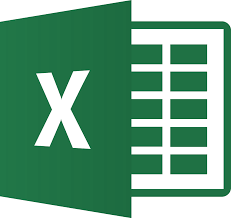

Excel es un programa del tipo Hoja de Cálculo que permite realizar operaciones con números organizados en una "cuadrícula".
Es útil para realizar desde simples sumas hasta cálculos de préstamos hipotecarios.
Esta versión de Excel 2016 trae las siguientes novedades y mejoras.